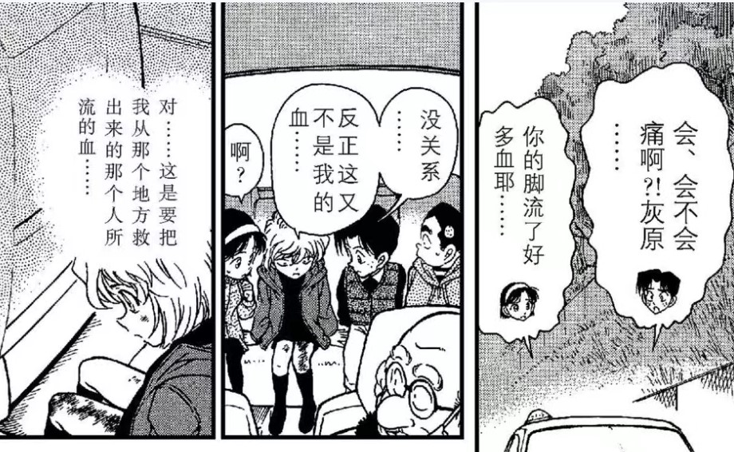
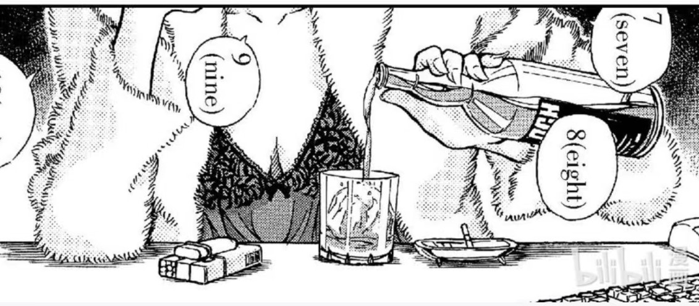
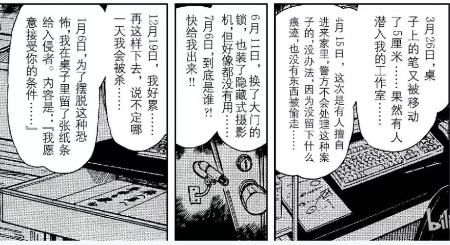

最近回顾漫画，发现早前连载中有不少细节被忽略了，如今再重温，难免有细思极恐之感。
因为时间有限，暂时先把回顾范围限缩到18-43卷，也就是哀出场到满月篇为止。此后，将视时间宽裕程度，陆续更新。
由于本人阅读量有限，此处收录的是我未曾关注过或看过有人讨论的地方，或者是存有争议的地方。主观性非常强，聊以记录之用，不具任何权威性和参考价值。
因为时间有限，暂时先把回顾范围限缩到18-43卷，也就是哀出场到满月篇为止。此后，将视时间宽裕程度，陆续更新。
由于本人阅读量有限，此处收录的是我未曾关注过或看过有人讨论的地方，或者是存有争议的地方。主观性非常强，聊以记录之用，不具任何权威性和参考价值。
1. Vol. 18
 灰原哀登场第一案，重点提及了两幅画：一幅是毕加索的《哭泣的女人》，一幅是梵高的《向日葵》，前者突出在文字，后者突出在画面。
灰原哀登场第一案，重点提及了两幅画：一幅是毕加索的《哭泣的女人》，一幅是梵高的《向日葵》，前者突出在文字，后者突出在画面。
《哭泣的女人》是毕加索为自己的情人朵拉·玛尔所作。朵拉是毕加索众多情人中最聪明和最才华横溢的一位，可惜当时她因为和毕加索的另一位情人玛丽·泰瑞沙·沃尔特争风吃醋，因而常常哭泣，这成为了毕加索的灵感源泉。当然，最后两位都没能留住绝世渣男毕加索。【此处的凸显，可能暗示了兰和哀两位作为“为工藤新一哭泣的女人”的定位。（没有说你新是渣男的意思）】
哭泣的女人分别体现在该案的前一案《初恋情人篇》，与后一案《广田教授被杀案》中。
《哭泣的女人》是毕加索为自己的情人朵拉·玛尔所作。朵拉是毕加索众多情人中最聪明和最才华横溢的一位，可惜当时她因为和毕加索的另一位情人玛丽·泰瑞沙·沃尔特争风吃醋，因而常常哭泣，这成为了毕加索的灵感源泉。当然，最后两位都没能留住绝世渣男毕加索。【此处的凸显，可能暗示了兰和哀两位作为“为工藤新一哭泣的女人”的定位。（没有说你新是渣男的意思）】
哭泣的女人分别体现在该案的前一案《初恋情人篇》，与后一案《广田教授被杀案》中。
2024-01-23 13:55 | 柯哀♬:看到标题我在想，18卷还能有没被讨论过的内容？看到第一楼后：woc还能这样？2024-01-23 20:11 | 贴吧用户_6S5DG662P:lz太厉害了
那这《哭泣的女人》与毕加索的经历，暗示柯哀会是be吗？2024-01-24 12:28 | 贴吧用户_GDC2WKb:回复 贴吧用户_6S5DG662P :据说柯南在青山那代表前妻，青山又把灰原哀代表自己，应该是ge吧2024-01-25 03:50 | 讲给风听836:我去，这都能找到2024-01-27 00:22 | blaze6º:lllpojple2024-01-27 08:38 | 12333333k:回复 贴吧用户_6S5DG662P :不是，两位情人都没留住毕加索，真要一板一眼对照，不是新兰柯哀全部be
赶上直播了？
2024-01-23 05:30 | 九九玉生烟:断断续续更

《向日葵》系列是梵高的代表作品，共有十余幅。有人认为，向日葵代表了梵高对生命的热爱与追求，也有人认为这些作品体现出了梵高与高更“相爱相杀”般的友情，但也有人认为，这与梵高坎坷的情路密不可分。不过，73经M19明确赋予了作品【我的眼里只有你】的爱情内涵。撇开梵高对高更艺术见解的执著（甚至割掉了自己的一只耳朵），单论恋情的话，梵高的爱情都有些不伦的痕迹：第一段是单恋一位已经订婚的邻家姑娘，第二段是单恋自己已婚的表姐，第三段是与站jie女相恋，第四段是与大十岁的女邻居相恋并被迫分手。总之，梵高的爱情史和友情史都十分狂热，而73在柯哀感情戏的描写中时常掺杂大开大合的大场面，似乎也隐含着对这种气质的欣赏。
2024-01-23 10:08 | 不过期月饼♬:突然有个想法，向日葵花语官方意义应该是入目无他人，四下皆是你，还有沉默的爱。找遍全网并没有发现有“我的眼里（中)只有你” 这一条，我的眼里（中)只有你，这个说法算不算是青山的原创？2024-01-23 10:10 | 九九玉生烟:回复 不过期月饼♬ :应该是原创2024-01-23 12:07 | 热情的土豆丝儿:回复 九九玉生烟 :不是，日文环境里随便一搜向日葵的花语就是“我只看着你”“憧憬”“热情”，取自向日葵永远朝着太阳。2024-01-24 03:00 | 不过期月饼♬:回复 热情的土豆丝儿 :日本那边向日葵花语的定义，就是m19里老奶奶原话吗？大概是什么时候有的？一直都是这样的吗？但是我看过国内及基维百科，真的是在m19之后才出现这个说法。2024-01-24 06:53 | 热情的土豆丝儿:回复 不过期月饼♬ :就是原话，你用“ひまわり”和“花言葉”“あなただけを見つめる”限定电影上映前的范围随便搜，一车一车的结果，在日本这就是最通行的向日葵花语之一2024-01-24 08:00 | 不过期月饼♬:回复 热情的土豆丝儿 :👌🏻2024-01-24 08:03 | 热情的土豆丝儿:回复 不过期月饼♬ :哦另外……你不觉得“入目无他人四下皆是你”就是当年网络不发达时文艺青年瞎翻译的“我只看着你”吗……2024-01-30 06:19 | 白色之心3:回复 不过期月饼♬ :入目无他人，四下皆是你不就是我的眼里只有你的意思吗？2024-01-30 08:00 | 不过期月饼♬:回复 白色之心3 :相近意义≠原话2024-03-25 08:07 | DEATHRUG1:回复 不过期月饼♬ :入目无他人不就是我的眼里只有你么？！
赶上大佬直播啦
2024-01-23 05:39 | 九九玉生烟:会更得非常慢
2. Vol. 19
和叶出场第一案，明确提到了和平次的护身符，是【全世界仅有两个】的护身符。换言之，这个护身符具有不可替代性。所以对73而言，护身符除了称谓上的涵义外，还必须具有独一无二性，真正独一无二又成对的，其实目前只有柯哀的两副眼镜。
2024-01-23 12:22 | 103林:2024-01-24 04:49 | 奥斯丁格理芬:2024-01-24 10:39 | 74yuanf:2024-01-24 10:39 | 74yuanf:是这样的

3. Vol. 21
工藤新一第一案，以柯南身份所乘坐的飞机是BIRD号，一只黑鸟坐在月亮上，而回忆中的去美国时所乘坐的飞机是LUNA号，正是一轮弯月。暗示了月亮正被黑组侵蚀的过程。
为了进一步凸显黑鸟的象征意义，本案中所有的嫌疑人与被害人，名字里均有一个鸟字。
为了进一步凸显黑鸟的象征意义，本案中所有的嫌疑人与被害人，名字里均有一个鸟字。
2024-01-23 06:17 | 白蛋💯:爱德华克洛也是Edward Crow乌鸦2024-01-23 07:53 | 黑礼帽的誓言:好细2024-01-23 10:16 | Amuro零:回复 白蛋💯 :之前很多人猜他是boss的2024-01-24 00:16 | ▫抱明月而长终:我超，楼主好细2024-01-24 10:39 | 74yuanf:2024-01-25 03:14 | QuantumEntangl:细节超赞2024-02-08 21:27 | 贴吧用户_0yVME5Z:楼主好细2024-02-22 20:18 | 笑面hwh:哇！这一点好牛啊！
唯一的例外是这个外国记者。秉着不可能存在例外的想法，我特地去看了一下日语版，根据片甲名读法，这个记者的姓实际与CROW（乌鸦）的日语发音一致。
虽然这个记者目前为止没有印象有再次出现，但至少在当时连载时，73已经通过这个手法暗示了黑组与乌鸦之间的关联。
2024-01-23 10:17 | Amuro零:之前很多人猜他是boss2024-01-28 22:39 | 依人涉水:回复 Amuro零 :确实有点莫里亚蒂的感觉
好
赶上直播了
啊啊啊啊啊赶上九九大佬直播了！
插个眼
18至43卷我在别的地方评论过，毋庸置疑是青山的巅峰期，尤其是18卷灰原哀登场到26卷危命的复活。在案件推理方面，广田教授案（19卷），浪花连续杀人案（19卷），魔术爱好者杀人案（20卷），工藤新一飞天密室（21卷），最终播映杀人（23卷），二十年的杀意（23卷）鸟取蜘蛛屋（25卷）这些是青山自己画的漫画中最好的案件基本都集中在这一时期。而且这一时期还是名柯从单纯的破案向剧情（恋爱，主线）转型的时期，标志就是灰原哀的出场，在哀之后出场的有远山和叶，佐藤美和子，京极真。很多SR所谓的恋爱推理，直到哀的登场才正式开始展开。
2024-01-24 05:13 | 九九玉生烟:是的，所以我在有限的时间内，第一选择就是这段时期，而且我认为这段时期的很多铺垫和暗示对后阶段创作有着深远影响2024-01-24 10:42 | 74yuanf:回复 九九玉生烟 :还有很多伏笔或者意向还等待发掘的意思？ 大佬们gkd gkd
cy
cy
4. Vol.25
藉由案件当事人的对话，73明确了远距离恋爱的要素：执著与纠缠。这段话同时触动了园子和兰姐二人。
园子立刻打电话给了远在国外的京极真，并且藉由兰姐的话可知，手机就是园子送给京极真表明远距离恋爱决心的象征。
新一基于此，为了表明自己的决心，也送给了兰姐一部手机，这应该是早期非常重要的一个SR糖点。 然而，在真第一集里，73亲自废除了这一设定……将送手机的契机改为了对兰姐的赔偿。从侧面表明，73否定了新一对兰姐【执著又缠人】的设定。
园子立刻打电话给了远在国外的京极真，并且藉由兰姐的话可知，手机就是园子送给京极真表明远距离恋爱决心的象征。
新一基于此，为了表明自己的决心，也送给了兰姐一部手机，这应该是早期非常重要的一个SR糖点。 然而，在真第一集里，73亲自废除了这一设定……将送手机的契机改为了对兰姐的赔偿。从侧面表明，73否定了新一对兰姐【执著又缠人】的设定。
2024-01-23 08:41 | 注定暴富的阿也:这个收到礼物后的态度谁看了不上头2024-01-23 09:35 | 风谷藏音:痴情又缠人在新兰关系中特指小兰吧，失去了就无理取闹，得到了又任性妄为2024-01-23 09:41 | 150XXXX0800:兰姐怀疑小柯身份，明示要手机之后又装无事发生是在干什么啊2024-01-25 08:13 | 贴吧用户_QSJ9y3J:都不担心一下新一到底为什么变小、钱够不够花吗
觉得不好写了吧 思路改变了2024-02-18 13:37 | pingerlacus:我发现新兰糖有个特点，无论前面描写多感人，最后的定格都会急转直下。2024-03-18 10:35 | 贴吧用户_0bDS2EM:回复 150XXXX0800 :刷老爹的卡
大佬
5. Vol. 26
著名的《危命的复活》篇，SR在舞台上表演的剧目名叫《浪漫洗牌》，为了进一步明确初始含义，我找到日版剧名，能确定就叫《Shuffle Romance》,翻译为浪漫洗牌或洗牌罗曼史都没有问题。
问题的关键在于如何理解“洗牌”。实际上，不论是英语语境还是日语语境，shuffle都有打乱重来的意思。最契合这一解读的是日剧《恋爱洗牌》，本名《Love Shuffle》，09年由玉木宏等一票大牌主演，讲的就是一群男女“重新配对”的故事。是的，这个剧明确讲了最开始的配对都不是真爱，重新洗牌后才各自找到真爱的故事。 虽然二者创作的时间不同，应该说73设计的shuffleromance远早于这部loveshuffle，但关于洗牌的解读是不会存在偏差的。其中的意味，就请自行解读吧。
问题的关键在于如何理解“洗牌”。实际上，不论是英语语境还是日语语境，shuffle都有打乱重来的意思。最契合这一解读的是日剧《恋爱洗牌》，本名《Love Shuffle》，09年由玉木宏等一票大牌主演，讲的就是一群男女“重新配对”的故事。是的，这个剧明确讲了最开始的配对都不是真爱，重新洗牌后才各自找到真爱的故事。 虽然二者创作的时间不同，应该说73设计的shuffleromance远早于这部loveshuffle，但关于洗牌的解读是不会存在偏差的。其中的意味，就请自行解读吧。
2024-01-23 23:06 | ლ卿不言ლ:难他天？2024-01-24 07:41 | Z-吉皿:我的天........刚圣啊2024-01-25 09:44 | 即将02的废物月:爆2024-01-26 08:12 | 艺术大队总监🌟:难他天？2024-02-08 15:57 | 啊污里:我感觉这个是柯哀，秀兰。包括这几个人都对兰幻视明美，兰对新一的印象错位，新一对兰的还没揭示的可能存在的错位等。2024-02-12 12:47 | Colette柯蕾特:难他天？？2024-02-18 04:23 | 讲给风听836:也就是说从这一次开始，人物关系将会洗牌2024-02-21 23:34 | AYUnbelievable:难蚌

同样涉及到“重新配对”主题的，是Vol. 102的第1091话。因为比较在意，此处“重新配对”与前述shuffle romance的区别，所以特地去找了日版对应。
 发现，日语此处标的是コラボ，意味合作、共同打造之意，应为英语collaborate的舶来词，所以根本没有恋爱配对、洗牌之意。而这点也的确契合本作最终主题。所以排除译者自作主张的理解，73本人是非常清楚恋爱洗牌和重新配对之意的，这更加确证了SR舞台剧目设计的刻意性。
发现，日语此处标的是コラボ，意味合作、共同打造之意，应为英语collaborate的舶来词，所以根本没有恋爱配对、洗牌之意。而这点也的确契合本作最终主题。所以排除译者自作主张的理解，73本人是非常清楚恋爱洗牌和重新配对之意的，这更加确证了SR舞台剧目设计的刻意性。
蹲蹲直播

蹲蹲
赶上热乎的了
cy
第二点的图可以再截全点，和叶：这跟你又没关系。 后面漫画骂多送护身符的是渣男也是和叶说的～
后面漫画骂多送护身符的是渣男也是和叶说的～
后面漫画骂多送护身符的是渣男也是和叶说的～
2024-01-23 08:04 | 九九玉生烟:哈哈2024-01-24 23:47 | waighty:“护身符和你没关系”2024-01-25 00:02 | 撩妹有糖吃😘:回复 waighty :场外看其实就是作者把兰和护身符的关系已经撇开了，后面的多发是渣男等于是加buff稳固这设定2024-03-18 06:58 | sc439291470:和叶真是嘴替本替了2024-03-18 10:38 | 贴吧用户_0bDS2EM:和叶这句怕不是在清算动画组原创的柯南要用侦探徽章窃听和目暮警官不派人监视
6. Vol. 27
我个人的细思极恐：X暗示那么明显，但是很长时间愣是没有看懂过。。。
2024-01-23 16:44 | 贴吧用户_0795E8E:要命的是兰是被安排为夏天的兰花牌，而且配了海滩关键剧情与地点2024-01-26 03:34 | ✨星光🌟魔女💫:这篇开头我刚开始以为是捏他一首city pop（君たちキウイ・パパイア・マンゴーだね），后面看完发现没啥关系，但是这首歌歌词提到了雪莉酒还是让我轻轻代了一下2024-03-18 10:39 | 贴吧用户_0bDS2EM:我还以为是在说大小
7. Vol. 27
连环纵火案，也是高佐感情进展的关键一案。这个事件实际是佐藤父亲殉职与连环纵火的合并案件，令人瞩目的有两点：一个是佐藤父亲于18年前殉职，另一个是纵火地点的关键突破口是哀破解的。 因为哀的父母均死于其出生后没多久的一场大火中，具体是17年前还是18年前其实没有明确的交代。在本案中突出的两个信息，有对宫野夫妇的遭遇的深层次暗示。
连环纵火案，也是高佐感情进展的关键一案。这个事件实际是佐藤父亲殉职与连环纵火的合并案件，令人瞩目的有两点：一个是佐藤父亲于18年前殉职，另一个是纵火地点的关键突破口是哀破解的。 因为哀的父母均死于其出生后没多久的一场大火中，具体是17年前还是18年前其实没有明确的交代。在本案中突出的两个信息，有对宫野夫妇的遭遇的深层次暗示。
2024-01-23 14:35 | 平者深黑:目前读者一般推测宫野夫妇死亡是17年前，因为浅香在羽田案之前大概不认识艾莲娜，她比较可能是在羽田案后与艾莲娜有接触2024-01-23 18:38 | 贴吧用户_GWXDWXQ:回复 平者深黑 :必须的，因为浅香之前根本没听说过什么黑衣组织，是在羽田死后开始慢慢调查
哇，大佬新鲜的帖子
cy
顶
8. Vol. 27
我一直在思考苹果在本作的内涵。直到看到了Vol. 34中平次对A药的误读【Appletoxin】。也就是说，A药的实质就是【有毒的苹果】。而根据圣经旧约所指，苹果有毒实际是上帝怕人类明辨是非而谎称的毒性。 排除后期新加入的玛丽姨妈，此前吃过A药的仅有二人，即柯&哀。对应唯二变小的异类，此二人正是因为吃了【有毒的苹果】而被逐出伊甸园的亚当和夏娃。
我一直在思考苹果在本作的内涵。直到看到了Vol. 34中平次对A药的误读【Appletoxin】。也就是说，A药的实质就是【有毒的苹果】。而根据圣经旧约所指，苹果有毒实际是上帝怕人类明辨是非而谎称的毒性。 排除后期新加入的玛丽姨妈，此前吃过A药的仅有二人，即柯&哀。对应唯二变小的异类，此二人正是因为吃了【有毒的苹果】而被逐出伊甸园的亚当和夏娃。
2024-01-23 08:48 | 平者深黑:这个是笨蛋toxin（ahotoxin，アホトキシン），正确的写法是アポトキシン。就是去掉了半浊音，意思是“笨蛋”，跟苹果没关系2024-01-23 08:56 | 九九玉生烟:回复 平者深黑 :感谢纠正，找到了原文，确实是翻译的问题。但似乎苹果原解仍然没有找到根据？2024-01-23 16:46 | 贴吧用户_0795E8E:确实是禁果系的概念。 不光是jdj体系还是人鱼体系的。2024-01-27 06:29 | zero蛋👀👀:回复 平者深黑 :原来是错翻吗2024-01-28 22:45 | 依人涉水:，我一直以为和之后伦敦篇的腐烂的金苹果相关联
所以哀很可能是1224生日，毕竟平安夜英文直译是圣诞的夏娃，亚当夏娃两个合起来是一个人又能对应二分之一福尔摩斯。
cy
根据@平者深黑大佬的纠正，找到了原文，确认为翻译的误导。 不过苹果究竟该如何解读，还是个问号❓
2024-01-24 11:34 | ☞坚硬如水☜:翻译的问题 找了个中国人能理解的梗 很正常
是九九大的分析~蹲蹲！
常看常新，温故而知新！
来了捏
9. Vol. 28-29
73有意在这两卷中连续设计了三个案件，分别是人鱼岛案，连续袭击黑妹案，和公交车劫持案。
对应了三个CP：平&和，目暮&小绿，柯&哀。
连续的一贯主题是：命悬一线+充满爱意的伤痕。 三个案件中，三对CP都经历了极致的生死考验。
也都留下了充满爱意的伤痕。
73有意在这两卷中连续设计了三个案件，分别是人鱼岛案，连续袭击黑妹案，和公交车劫持案。
对应了三个CP：平&和，目暮&小绿，柯&哀。
连续的一贯主题是：命悬一线+充满爱意的伤痕。 三个案件中，三对CP都经历了极致的生死考验。
也都留下了充满爱意的伤痕。

前两起案件，73明确借人之口指出了“充满爱意”“罗曼史”的字眼，承接的第三起案件意味着什么，不言自明。2024-01-24 00:27 | ▫抱明月而长终:我记得这里的医生好像是贝姐来着，不愧是干妈啊，这么关心小柯2024-01-25 08:59 | Thomastar6:纯脑洞，我一直想着要是73给c来个伤疤，结局的时候兰通过位置一样的痕迹发现新一是柯南大概是个不错的处理，思来想去觉得神秘乘客最适合这样埋伏笔，但73可能当时忙着给满月造势2024-01-26 03:00 | 贴吧用户_7USKyJE:ky下，绿真好看2024-01-26 10:49 | 櫻花樹下de约定:回复 Thomastar6 :其实危命前篇不就是吗 腹部中弹2024-01-26 11:05 | 九九玉生烟:回复 櫻花樹下de约定 :不是，那个中弹和哀无关2024-01-26 11:05 | 九九玉生烟:回复 Thomastar6 :因为按小柯这种摔法，浑身可能都没一块好肉了2024-01-26 13:28 | 櫻花樹下de约定:我是指她说的兰通过伤痕确认新一和柯南啦2024-03-18 10:41 | 贴吧用户_0bDS2EM:园子都知道“这个不有趣”，搞得像平次那个就很有趣一样
来了来了
好久不见啊九九
九九我来啦！！！！！
来啦
10. Vol. 29
爱犬之家案，男主人养了两条狗，分别叫亚瑟和道尔，缺的柯南，借步美之口，由柯南本尊补齐了。此处两度暗示，亚瑟及其主人，即为柯南的替身。 作为柯南替身之一的亚瑟，对哀表现出了与柯对哀一样的熟悉路径：先狂吠再亲近。 亚瑟一开始因为哀和博士身上沾的狗毛而误解，并产生很大敌意，并惹哀伤心。
误会解除后，最后让哀露出了灿烂的笑容。 此外，本篇另一个暗喻，即暗示男女主＝柯哀。
此外，本篇另一个暗喻，即暗示男女主＝柯哀。
男主作为亚瑟的主人，要带着亚瑟去伦敦，而亚瑟不舍得女主养的狗，因而产生了误会。女主名叫莲木志乃（はすきしの），名字部分非常像宫野志保（みやのしほ）当中二字摘出来的变体。女主答应了男主的邀约，愿意与其共赴伦敦，实际是答应了求婚。在这一场景中，有个构图尤为引人瞩目。 表面是女主在问亚瑟是不是不喜欢自己了，而柯子替亚瑟答，并不是，而是希望女主一直待在这里。但是女主的对话框在哀的头上，代表女主发声的箭头也设置得很隐蔽，乍一看，就像哀在问，柯在答一样。结合前面所说，亚瑟是柯的替身，男女主是柯哀的替身，也就是在这一组构图里暗示的是，哀在问柯喜不喜欢自己，而柯的回答是他没有不喜欢哀，而是希望哀一直待在自己身边。
爱犬之家案，男主人养了两条狗，分别叫亚瑟和道尔，缺的柯南，借步美之口，由柯南本尊补齐了。此处两度暗示，亚瑟及其主人，即为柯南的替身。 作为柯南替身之一的亚瑟，对哀表现出了与柯对哀一样的熟悉路径：先狂吠再亲近。 亚瑟一开始因为哀和博士身上沾的狗毛而误解，并产生很大敌意，并惹哀伤心。
误会解除后，最后让哀露出了灿烂的笑容。
男主作为亚瑟的主人，要带着亚瑟去伦敦，而亚瑟不舍得女主养的狗，因而产生了误会。女主名叫莲木志乃（はすきしの），名字部分非常像宫野志保（みやのしほ）当中二字摘出来的变体。女主答应了男主的邀约，愿意与其共赴伦敦，实际是答应了求婚。在这一场景中，有个构图尤为引人瞩目。 表面是女主在问亚瑟是不是不喜欢自己了，而柯子替亚瑟答，并不是，而是希望女主一直待在这里。但是女主的对话框在哀的头上，代表女主发声的箭头也设置得很隐蔽，乍一看，就像哀在问，柯在答一样。结合前面所说，亚瑟是柯的替身，男女主是柯哀的替身，也就是在这一组构图里暗示的是，哀在问柯喜不喜欢自己，而柯的回答是他没有不喜欢哀，而是希望哀一直待在自己身边。
2024-01-23 11:11 | 撩妹有糖吃😘:小柯替身这个解释很妙诶，2024-01-23 12:31 | ✨心有灵兮:我那会儿看这里从柯狗子挂了想到假死去了hhh，柯本来也是假身份，总要消失的
啊啊啊啊，好磕，所以这段也可以对应月台追妻那一幕，柯希望哀留在他身边2024-01-23 21:02 | specialBATyum:这个解读太好磕了2024-01-24 00:06 | 顏值爆棚的喜碧:確實！ 這裡小哀的嘴巴也是張開的！2024-01-24 01:15 | 乘UFO的ET:这个解读有点精妙2024-01-24 02:36 | NatsumiSakurai:这一话亚瑟喜欢的雌性狗狗叫克里斯汀，是这个志乃女士的狗狗，有意思的是，克里斯丁是苏格兰牧羊犬～（英国血统）亚瑟是日本柴犬却叫英国名字（柯南）。2024-01-24 02:36 | NatsumiSakurai:这一话还有亚瑟和克里斯汀贴贴的小格子，然后三小只说这是打情骂俏噢。2024-01-24 03:50 | 世界上没有真理:回复 NatsumiSakurai :那隻狗狗叫克莉斯汀應該是影射推理女王阿嘉莎·克莉絲蒂 ，至於另一隻狗叫亞瑟，是影射柯南道爾，柯南道爾全名亞瑟·伊格內修斯·柯南·道爾，所以這兩隻狗狗分別用推理國王推理女王的名字來命名，我認為這也是在影射柯哀2024-01-24 03:59 | 林中的熊宝宝🐨:回复 世界上没有真理 :神了，大佬！！2024-01-24 04:17 | NatsumiSakurai:回复 世界上没有真理 :如果用阿加莎这名字就会很过头，于是老贼留一手2024-01-24 09:24 | 山楂的恋爱宝典:回复 世界上没有真理 :所以青山相比于“公主骑士”，明显更喜欢“女王国王”，而伦敦篇特意点出了“要配得上女王必先成为王”，这是在点柯子呢2024-01-24 10:48 | Bunjul:难他天？？！2024-01-24 11:52 | 不檬很芒:这一案感觉处处在点柯哀2024-01-24 22:20 | 墨染诗篇入云间:这个女主人的神态也跟哀好像2024-01-25 01:33 | 971127💤:还有跳河预言2024-01-25 04:51 | Ranehta:天才漫画家的分镜连对话框都是道具2024-01-25 07:51 | 152622706jk:回复 NatsumiSakurai :难他天，好神2024-02-18 04:32 | 讲给风听836:对啊，如果没有替身这一说，只是为了解释剧情，这里完全可以不用画灰原的。2024-02-22 00:54 | AYUnbelievable:天才2024-02-22 11:53 | BLACK-X:到底埋了多少东西？真是越挖越有啊！2024-02-26 01:30 | 缒逑S哀:暴论！！！拖出去！！！2024-02-28 03:04 | 黑葉🌿:2024-03-14 10:35 | 不羡佐鸣:这一话甚至有最后那页有个分镜，柯南表情跟亚瑟几乎一模一样，加上中间柯南安慰小哀时说自己有类似她的组织雷达，能嗅出杀意是侦探的直觉，然后最后抓完犯人之后三小说亚瑟和克里斯很棒竟然会夹击犯人，柯南替亚瑟回答这是本能，直接细品了
回复 ✨心有灵兮 :一直觉得柯哀的情节，跟戒指💍啊、求婚之类的元素，相关性很大……
11. Vol. 29
K3案，工藤新一喜欢的足球明星犯事，柯子沮丧无比，而兰姐发表了一篇高论。 事实上，纵观前后文，新一从来没有展现过这种稍有瑕疵就摒弃的倾向。所以问题来了，兰姐是根据什么得出的这个结论？还是说她本人才有这种倾向，只不过把他移植到了新一头上？
这种病态设定目前尚未在已出场的任何人物中明确展现，不知道73以后会不会call back。
K3案，工藤新一喜欢的足球明星犯事，柯子沮丧无比，而兰姐发表了一篇高论。 事实上，纵观前后文，新一从来没有展现过这种稍有瑕疵就摒弃的倾向。所以问题来了，兰姐是根据什么得出的这个结论？还是说她本人才有这种倾向，只不过把他移植到了新一头上？
这种病态设定目前尚未在已出场的任何人物中明确展现，不知道73以后会不会call back。
2024-01-23 16:52 | 贴吧用户_0795E8E:这个以前没注意到，算是兰童话公主系列的。 就是说她对新一与整个新兰关系是童话世界的角色扮演。 其他这个系列的就是复活里的戏，拉窗帘其实也算， 还有重要的黑暗男爵在公主酒店的故事2024-01-23 16:53 | 贴吧用户_0795E8E:童话世界就是排斥信息的理想化小世界，注定破灭2024-01-25 04:37 | Ranehta:个人比较期待这会是一个照应贝新论的伏笔2024-01-25 07:55 | 贴吧用户_0795E8E:回复 Ranehta :这个想法也是对的，因为贝姐是拿的腐烂的金苹果与人鱼牌，她是对完美东西的瑕疵视为腐烂的前兆2024-01-26 11:25 | 艺术大队总监🌟:根据死罗神篇来看 这个人是她而不是新一2024-01-26 11:48 | 九九玉生烟:回复 艺术大队总监🌟 :你这么一说让我联想到了金苹果案的爱神就是眼里容不下瑕疵的人，这点和兰姐金苹果论又联系到一起了2024-01-26 13:47 | 樱花ぁあ飘落:这个发言被新兰分析文用来佐证“新一不会真心对灰原好/不会真心和怪盗基德合作”，但是漫画已经借角色之口驳斥“你是不懂侦探啊”。感觉倾向于是兰认知中的新一而不是真实的，同窗帘篇。（从不严谨的角度说，兰的身体越界不也算瑕疵吗？）2024-03-18 10:46 | 贴吧用户_0bDS2EM:回复 九九玉生烟 :哇！脚踏三条船啊！ 额！其实是他出轨了三个人
蹲

牛逼
。
没了嘛
cy
真就每个系列都能挖出糖呀
太细了
cy
😁细狗嘻嘻
3
cy
cy
cy
cy
12. Vol. 30
大有深意的直球篇，传递了如下几个信息：
1. 在列车即将入站前，兰姐和新一通电话表示有问题要问，而这时有个闪回镜头，是园子起的头。 而园子的这个问题场景出现在Vol.28的商场袭击案，具体场景如下： 请注意左下角小柯爆红的脸，也就是说，面对园子点穿兰姐的疑问【新一对我有没有意思/喜不喜欢我】，小柯已经听到了，换言之，他早在Vol.28时已经知道了兰姐一直以来的心事和疑问。而这个问题什么时候才被正式揭穿并得以回答呢？
是直到Vol. 71的伦敦篇，也就是那场著名SR追逐戏的源起：“是侦探的话就来推理一下我的心事！” 2. 而早已知道答案的新做了一件什么事呢，在兰即将问出口之际，藉由呼啸而至的列车，果断挂断了电话。 这里有两处特别有意思，一处是迫不及待地挂断电话，都不给兰姐任何的反应机会，还有一处是呼啸而至的新干线名为“希望号”，但是新一把兰姐的“希望”给断了。
这里有两处特别有意思，一处是迫不及待地挂断电话，都不给兰姐任何的反应机会，还有一处是呼啸而至的新干线名为“希望号”，但是新一把兰姐的“希望”给断了。
为了更进一步凸显新一对兰姐问题的逃避态度，紧接着真相帝平次登场，并一针见血指出新一就是懦弱和逃避。注意小柯的表情，他当然是心知肚明。 而这种逃避态度，在名场面伦敦篇里又被兰姐call back了。 所以说，新一态度始终如一，73真是不忘初心。
大有深意的直球篇，传递了如下几个信息：
1. 在列车即将入站前，兰姐和新一通电话表示有问题要问，而这时有个闪回镜头，是园子起的头。 而园子的这个问题场景出现在Vol.28的商场袭击案，具体场景如下： 请注意左下角小柯爆红的脸，也就是说，面对园子点穿兰姐的疑问【新一对我有没有意思/喜不喜欢我】，小柯已经听到了，换言之，他早在Vol.28时已经知道了兰姐一直以来的心事和疑问。而这个问题什么时候才被正式揭穿并得以回答呢？
是直到Vol. 71的伦敦篇，也就是那场著名SR追逐戏的源起：“是侦探的话就来推理一下我的心事！” 2. 而早已知道答案的新做了一件什么事呢，在兰即将问出口之际，藉由呼啸而至的列车，果断挂断了电话。
为了更进一步凸显新一对兰姐问题的逃避态度，紧接着真相帝平次登场，并一针见血指出新一就是懦弱和逃避。注意小柯的表情，他当然是心知肚明。 而这种逃避态度，在名场面伦敦篇里又被兰姐call back了。 所以说，新一态度始终如一，73真是不忘初心。
2024-01-26 07:51 | 卷福花生酱酱酱:“不要逃避自己的命运”2024-01-31 05:17 | 贴吧用户_aWKKy7G:是否因为柯南不知道是否能变回新一，所以不能贸然回复？2024-02-08 21:38 | 贴吧用户_0yVME5Z:ps：看见26号月台了2024-02-18 14:57 | pingerlacus:面对小兰的直球柯南逃避了，但却时不时地试探小哀对他的想法～
直球系列隐含了两段感情，一个是兰→新，还有一个是高→佐。采用直球手段的兰没成功，新逃了，采用变化球手段的高木以为自己失败了，实际成功了。
这个系列中文名叫《直球定输赢》，而日文名叫《直球胜负》，实际隐含的涵义并不是说靠直球来定结果，而可能是让读者猜测采用直球能不能赢的意思。显然，对比出真知。
这个系列中文名叫《直球定输赢》，而日文名叫《直球胜负》，实际隐含的涵义并不是说靠直球来定结果，而可能是让读者猜测采用直球能不能赢的意思。显然，对比出真知。
2024-01-25 09:12 | sakatagitoki:我查了一下，“直球勝負”在日语里，有两个意思，除了用于棒球领域的专业解释，另外一个意思是：“策略を用いることなく、正々堂々と物事に向かい合うこと。” 即，“不使用策略，堂堂正正地面对事情”。对应新兰，双向逃避了属于是，小兰想问没问出口，而新一则是以列车到站为借口抢先挂了电话。2024-01-25 09:15 | sakatagitoki:所以，“直球胜负”，其实就是看身在关系中的人，能否坦诚，能否直面问题，很显然新兰之间是没有的。2024-01-26 07:38 | 九九玉生烟:回复 sakatagitoki :谢谢大佬补充，这样更具体和贴切了
cy
C y
难他天
推推九九老師
13. Vol. 31
著名的温暖的大海篇，也是哀内心正式接纳兰姐的重要篇章。关于哀为什么会在此刻此地与兰姐达成和解有很多看法，我尝试从各种意象中解读一二。
发生地：伊豆海滩。 提及伊豆，最为知名的就属川端康成的《伊豆的舞女》了，主要讲述一名少年在人生迷茫期遇到了一群流浪艺人，并被其中年仅14岁的舞女熏子所吸引，二者相识、相知、相惜，互相爱慕但最终离别的故事。这部小说以川端康成自身的经历为原型，虽然作为学生，当年的社会地位很高，被人称为“少爷”，但其实作者从小父母双亡，亲人在其年少时期均撒手人寰，因而作者长期处于孤僻、抑郁的状态，在这样的情形下，作者来到伊豆，遇到了纯情貌美的舞女，并一步步为其单纯、质朴的气质所吸引。然而，阶级的差距让彼此爱慕的二人从未开始过真正的恋情，还未开始变已结束是本书的主基调，却也是崇尚“物哀”之美的日本人心中至臻的爱情代表。
作为日本人最为推崇的作品之一，我认为73选择伊豆海滨为舞台来展现哀的所思所感乃至心态转变，是有意而为之。
（本人文学素养较低，以下均为百科及某乎的观后感所得）
著名的温暖的大海篇，也是哀内心正式接纳兰姐的重要篇章。关于哀为什么会在此刻此地与兰姐达成和解有很多看法，我尝试从各种意象中解读一二。
发生地：伊豆海滩。 提及伊豆，最为知名的就属川端康成的《伊豆的舞女》了，主要讲述一名少年在人生迷茫期遇到了一群流浪艺人，并被其中年仅14岁的舞女熏子所吸引，二者相识、相知、相惜，互相爱慕但最终离别的故事。这部小说以川端康成自身的经历为原型，虽然作为学生，当年的社会地位很高，被人称为“少爷”，但其实作者从小父母双亡，亲人在其年少时期均撒手人寰，因而作者长期处于孤僻、抑郁的状态，在这样的情形下，作者来到伊豆，遇到了纯情貌美的舞女，并一步步为其单纯、质朴的气质所吸引。然而，阶级的差距让彼此爱慕的二人从未开始过真正的恋情，还未开始变已结束是本书的主基调，却也是崇尚“物哀”之美的日本人心中至臻的爱情代表。
作为日本人最为推崇的作品之一，我认为73选择伊豆海滨为舞台来展现哀的所思所感乃至心态转变，是有意而为之。
（本人文学素养较低，以下均为百科及某乎的观后感所得）
哀同时具备了故事男女主人公的特质。男主因为至亲亡故而仅有孤僻的“孤儿气质”，而来到伊豆后遇到了温暖的人，虽然恋情遗憾告终，但内心也得到了净化，并最终学会接受他人的好意，逐渐融入社会。这点与哀的身世和当前的境遇都十分相似，甚至本篇最后与兰姐的主动握手，也象征着哀开始学会放下过去，并融入更大范围的群体。
而哀与熏子的气质亦有相似处。熏子身为舞女，身处社会底层，尽管受到了哥哥的保护而展现出了清纯、可爱、羞涩的美好气质，却因为出身和职业，始终与男主存在着巨大的阶级差异，及时二人跨越了这层差异彼此交心，但依然无法走到一起，这也导致了男女主间的感情呈现的并非是纯粹的恋情，有评论认为是比恋情更为复杂的交织了友情、思慕和感激的感情。（这一评价与柯哀之间的感情何其相似）
下面这段描写亦有强烈的既视感：“我一开始朗读，她就立即把脸凑过来，几乎碰到我的肩膀，表情十分认真，眼睛里闪出光彩，全神贯注地凝望着我的额头，一眨也不眨。”
而哀与熏子的气质亦有相似处。熏子身为舞女，身处社会底层，尽管受到了哥哥的保护而展现出了清纯、可爱、羞涩的美好气质，却因为出身和职业，始终与男主存在着巨大的阶级差异，及时二人跨越了这层差异彼此交心，但依然无法走到一起，这也导致了男女主间的感情呈现的并非是纯粹的恋情，有评论认为是比恋情更为复杂的交织了友情、思慕和感激的感情。（这一评价与柯哀之间的感情何其相似）
下面这段描写亦有强烈的既视感：“我一开始朗读，她就立即把脸凑过来，几乎碰到我的肩膀，表情十分认真，眼睛里闪出光彩，全神贯注地凝望着我的额头，一眨也不眨。”
除了肖似男女主人公外，哀对于自身处境和恋情的见解亦有着深刻的《伊豆的舞女》痕迹。
在这段著名桥段里，哀将阶级差距以鲨鱼和海豚作比，表达出了一种愤懑与无力感。很多人都认为，这里所说的“一只海豚”仅指兰姐，其实不是的，这里既指兰姐也指新一，她认为他们是一类人。而自己作为鲨鱼，与新一的海豚族间的差距犹如天堑，因而根本无法比过同为海豚一族的兰姐。
关于两只海豚的意向，其实漫画中已经明确体现了。 这是一只绘有两只海豚的球，表面上似乎是园子在打，但其实最开始一直是兰姐抱着的。
而注意这句台词：“你已经无处可逃了！”后面，哀明确表示自己正是被海豚包围着“无处可逃”。 实际上，这时候连步美都是“海豚一族”。步美的泳圈是dolphin，当然在Vol. 103的香肠卷案时，整个少侦一起玩鲨鱼了。【所以73在此处call back，他们才是一族人】 除了自比海豚鲨鱼体现出阶级差距外，哀在旅馆里所看的《泰坦尼克号》也是阶级差距下爱情的著名代表作，不过与《伊豆的舞女》那种朦胧哀愁的意境不同，杰克和罗丝无惧二者的身份差距，爱情可谓轰轰烈烈。而73在M26里对《泰坦尼克号》的致意，更体现出他寻求阶级突破的立场。 所以，所谓握手的“勇气”，既可以理解为《伊豆的舞女》中对忧思的释怀，也可以理解为《泰坦尼克号》中对跨越阶级的决意。
关于两只海豚的意向，其实漫画中已经明确体现了。 这是一只绘有两只海豚的球，表面上似乎是园子在打，但其实最开始一直是兰姐抱着的。
而注意这句台词：“你已经无处可逃了！”后面，哀明确表示自己正是被海豚包围着“无处可逃”。 实际上，这时候连步美都是“海豚一族”。步美的泳圈是dolphin，当然在Vol. 103的香肠卷案时，整个少侦一起玩鲨鱼了。【所以73在此处call back，他们才是一族人】 除了自比海豚鲨鱼体现出阶级差距外，哀在旅馆里所看的《泰坦尼克号》也是阶级差距下爱情的著名代表作，不过与《伊豆的舞女》那种朦胧哀愁的意境不同，杰克和罗丝无惧二者的身份差距，爱情可谓轰轰烈烈。而73在M26里对《泰坦尼克号》的致意，更体现出他寻求阶级突破的立场。 所以，所谓握手的“勇气”，既可以理解为《伊豆的舞女》中对忧思的释怀，也可以理解为《泰坦尼克号》中对跨越阶级的决意。
2024-01-24 23:16 | 没字也行:84岁的老奶奶就是Rose，或者贝姐已经84岁了，Rose of 莎朗2024-01-25 04:25 | 咕咕188:所以这里握手的意思算不算哀从这里就登上舞台了，这次m26算是给她打上了聚光灯。因为之前看说日本武士对决前会先握手2024-02-21 11:59 | ilRobby:海鸥象征着面对困难时不会惧怕，而是勇敢坚强地面对
九九大佬辛苦了！
14. Vol. 32
《大阪城宝物》篇，和叶对平次，及兰姐对新一的差异，首次直观突显。 面对推理成功的平次，和叶自己的表情都是神采飞扬。
而反观兰姐，虽然嘴上说着自己与和叶是一类人，也喜欢看到神采飞扬的新一，实际却并不纯粹，夹杂着名为“不甘心”的情绪。 而她这种“不甘心”，直到Vol. 42超市案在新一的暗示下推理完成后还在持续着。 兰姐对自身的定位真得非常奇怪，就像她时不时拿自己的爸爸来比新一一样，一直处在定位不清、认识不足、维系着不必要的自尊的状态。她对新一的喜欢和欣赏，远远不如和叶对平次来得那么纯粹，甚至远不如园子对自己的喜欢。京极真就说过，自己是被“园子无条件地为朋友加油鼓劲的气势所吸引”。而兰姐根本做不到无条件地为新一加油，所以才有了Vol. 98甚至希望新一输的态度。可以说，Vol. 98正是对Vol. 32的call back。
《大阪城宝物》篇，和叶对平次，及兰姐对新一的差异，首次直观突显。 面对推理成功的平次，和叶自己的表情都是神采飞扬。
而反观兰姐，虽然嘴上说着自己与和叶是一类人，也喜欢看到神采飞扬的新一，实际却并不纯粹，夹杂着名为“不甘心”的情绪。 而她这种“不甘心”，直到Vol. 42超市案在新一的暗示下推理完成后还在持续着。 兰姐对自身的定位真得非常奇怪，就像她时不时拿自己的爸爸来比新一一样，一直处在定位不清、认识不足、维系着不必要的自尊的状态。她对新一的喜欢和欣赏，远远不如和叶对平次来得那么纯粹，甚至远不如园子对自己的喜欢。京极真就说过，自己是被“园子无条件地为朋友加油鼓劲的气势所吸引”。而兰姐根本做不到无条件地为新一加油，所以才有了Vol. 98甚至希望新一输的态度。可以说，Vol. 98正是对Vol. 32的call back。
2024-01-25 03:48 | 冰霜之外🔯:小兰在新一面前有着近乎神经过敏的极其自尊、好强的一面，这也是她有时言语打压否定新一的原因，因为要给自己“找场子”，她这一面在真第一集里也被反复的体现强调。对这样的她来说，新一的隐瞒欺骗不可能被轻描淡写揭过，绝对的惊天大雷。2024-01-26 04:14 | 某只吐槽者😘:兰常常通过有意无意拉低对方来获得关系上的平等，这种平等只能成为一种临时的假象2024-03-18 10:53 | 贴吧用户_0bDS2EM:爸爸：小区飞镖冠军；新一：省射击冠军；新一不输我老爹
15. Vol. 33
《X的意义》篇，是一个表面SR糖，背后细思极恐的一章。
关于X的涵义，贝姐表示是“女性独有的亲吻符号，是爱的证明。” 但这个KISS在本篇中，实际用到的三处却全都不是爱情，而是由美发给高木的“友情”，有希子发给新一的“母爱”，还有贝姐发给琴酒的“调情暗示”。
《X的意义》篇，是一个表面SR糖，背后细思极恐的一章。
关于X的涵义，贝姐表示是“女性独有的亲吻符号，是爱的证明。” 但这个KISS在本篇中，实际用到的三处却全都不是爱情，而是由美发给高木的“友情”，有希子发给新一的“母爱”，还有贝姐发给琴酒的“调情暗示”。
2024-01-25 19:50 | 小石头小小😈:细细细2024-01-27 06:46 | zero蛋👀👀:由美这个更像是“前辈对后辈的调戏”2024-02-17 23:59 | 贴吧用户_aGC8KNZ:图片最后有三个单词，眼镜，雪莉，答案2024-02-18 00:41 | 半夜一刀胃疼🌙:回复 贴吧用户_aGC8KNZ :细2024-02-18 01:09 | 九九玉生烟:回复 贴吧用户_aGC8KNZ :666666662024-02-18 04:43 | 讲给风听836:回复 贴吧用户_aGC8KNZ :戴着眼镜的雪莉才是答案？！！2024-02-19 21:36 | 贴吧用户_JQ66C9C:回复 讲给风听836 :脱了眼镜的柯南（就是新一）是不会飞的超人（m26飞了），戴着眼镜的雪莉就是答案，这都是再会篇的。盲猜一手新志同框，新一再次给志保戴眼镜（护身符）2024-02-22 12:12 | BLACK-X:回复 贴吧用户_aGC8KNZ :之前还有吧友说最后的3个“X”对应M26。2024-03-05 20:55 | ✨浮光掠影:回复 贴吧用户_aGC8KNZ :2024-03-18 10:54 | 贴吧用户_0bDS2EM:青山也会藏尾
高木：是恶作剧吧；柯南：虽然妈妈写了，但是什么意义；小兰：是不行的意思；新一：老妈这么看不起我？
那么，兰姐发给新一的，算不算爱情呢？应该是爱情。
但是，如果这算是爱情的表达，恐怕也并不美好。
请注意，贝姐这段用的拟声词“CHU”~。Affection在英语中就是爱恋的意思，的确不能作友情和亲情解，但是这段表达却揭开了一个并不美好的结局——也就是一旦XXX用来表达爱情的话，则可能变成【憎恨的烙印】 大家对CHU~还有印象吗？也就是SR轰轰烈烈的世纪之吻，兰姐献上的吻就是这个CHU~，换言之，兰姐献给新一的就是这个X。 而关于这个不详的X，除了贝姐明示可能成为仇恨的印记外，柯在此之前也有过这样的理解。 总而言之，依然是不详。
我虽然对最近很火的“兰姐恶魔论”抱有保守的看法，但这里的确埋了兰姐最后可能反水的暗线。至于最后73是否会启动这个原案，就有待观察了。
请注意，贝姐这段用的拟声词“CHU”~。Affection在英语中就是爱恋的意思，的确不能作友情和亲情解，但是这段表达却揭开了一个并不美好的结局——也就是一旦XXX用来表达爱情的话，则可能变成【憎恨的烙印】 大家对CHU~还有印象吗？也就是SR轰轰烈烈的世纪之吻，兰姐献上的吻就是这个CHU~，换言之，兰姐献给新一的就是这个X。 而关于这个不详的X，除了贝姐明示可能成为仇恨的印记外，柯在此之前也有过这样的理解。 总而言之，依然是不详。
我虽然对最近很火的“兰姐恶魔论”抱有保守的看法，但这里的确埋了兰姐最后可能反水的暗线。至于最后73是否会启动这个原案，就有待观察了。
2024-01-25 04:19 | Ranehta:兰兰反水论支持者顶顶，我要看血流成河2024-01-25 10:21 | 世界上没有真理:我也持保守論，感覺青山應該不會把蘭姐變黑而比較有可能是被人利用
66，又有让我耳目一新的分析
16. Vol. 35
《死亡岛》系列，这个开头特别有意思。平次带着柯子去猜短发小姐姐的泳装，结果柯猜错了。本以为这又是一个X暗示段子，但这个描写是不是似曾相识？ 【茶色短发的小姐姐，没有女人味。】右边是柯的评价
而平次却看到了小姐姐的美的一面，所以泳衣猜对了。
对此，平次评价是柯不擅长这种推理。事实是如此吗？他为什么主观认为这个小姐姐一定穿着【朴素的连身泳装】？
想起来了吗？哀第一次出海，伊豆的海滨，她穿的就是这种泳装！ 保守、朴素，配合着儿童贫瘠的身材，跟健康丰满拥有显著女性特征的兰姐比起来，的确差异显著，别说色狼柯嫌弃，就是哀自己也觉得相形见绌。 但即使是如此不具吸引力的外表，柯却深深记住了，甚至在只要涉及“茶色短发”这一符号后，他第一直觉就会想到哀。这点也与M5所对应。
只能说，如果一个人心里有谁的话，即使看上去各种嫌弃，但内在忘不掉就是忘不掉。
这也是首次开始凸显，只要涉及到哀元素，你柯好像就没法推理了。。。
《死亡岛》系列，这个开头特别有意思。平次带着柯子去猜短发小姐姐的泳装，结果柯猜错了。本以为这又是一个X暗示段子，但这个描写是不是似曾相识？ 【茶色短发的小姐姐，没有女人味。】右边是柯的评价
而平次却看到了小姐姐的美的一面，所以泳衣猜对了。
对此，平次评价是柯不擅长这种推理。事实是如此吗？他为什么主观认为这个小姐姐一定穿着【朴素的连身泳装】？
想起来了吗？哀第一次出海，伊豆的海滨，她穿的就是这种泳装！ 保守、朴素，配合着儿童贫瘠的身材，跟健康丰满拥有显著女性特征的兰姐比起来，的确差异显著，别说色狼柯嫌弃，就是哀自己也觉得相形见绌。 但即使是如此不具吸引力的外表，柯却深深记住了，甚至在只要涉及“茶色短发”这一符号后，他第一直觉就会想到哀。这点也与M5所对应。
只能说，如果一个人心里有谁的话，即使看上去各种嫌弃，但内在忘不掉就是忘不掉。
这也是首次开始凸显，只要涉及到哀元素，你柯好像就没法推理了。。。
2024-01-25 10:10 | 此僧甘向情中老:后面的Lolita装束，某柯马上就想到哀2024-01-25 19:54 | 小石头小小😈:这个我有印象，小兰好几次幻想和新一在一起的都是茶色短发的女人2024-03-15 15:25 | 阿v恶露天:666
17. Vol. 37
兰姐选择了黑色，与父母都不一样的倾向……一种暗示吗？ 灰色是温暖的颜色，也是暗示灰原哀的颜色。
结合本篇的前面一格： 也许意味着，被谎言束缚的兰姐，可能会因为痛苦和悲哀而选择黑暗之路。
兰姐选择了黑色，与父母都不一样的倾向……一种暗示吗？ 灰色是温暖的颜色，也是暗示灰原哀的颜色。
结合本篇的前面一格： 也许意味着，被谎言束缚的兰姐，可能会因为痛苦和悲哀而选择黑暗之路。
2024-02-09 09:19 | pingerlacus:很少人会觉得灰色是温暖的颜色，但青山却认证灰色是温暖的～
18. Vol. 37
板仓卓案，一个关于时间流逝，梦想和人心改变的故事。 请注意这一构图，兰姐位于这段话的中心。 当事人进一步感慨，然而紧接着的特写是：“小兰，再见”。这里不让人联想到，这场人心思变的等待中，兰姐离场的结局。
板仓卓案，一个关于时间流逝，梦想和人心改变的故事。 请注意这一构图，兰姐位于这段话的中心。 当事人进一步感慨，然而紧接着的特写是：“小兰，再见”。这里不让人联想到，这场人心思变的等待中，兰姐离场的结局。
2024-02-09 09:22 | pingerlacus:哇，这个画面！2024-02-19 21:43 | 贴吧用户_JQ66C9C:回复 九九玉生烟 :雪花来了，小兰再见...2024-03-05 20:58 | ✨浮光掠影:2024-03-05 21:20 | 九九玉生烟:刚圣，真这么画能发展出类似红学的东西
回复 ✨浮光掠影 :感觉m26以后，吧里已经有这个风向了2024-03-07 19:17 | 即将02的废物月:回复 ✨浮光掠影 :已经是了
19. Vol. 38
这是个牵强联想。
柯追踪板仓卓软件，并被哀所救的时间发生在2月14日，这点已经证成。
主要困惑点在于其所躲的柜门号0219，是否代表某种涵义。 目前为止各种猜测很多。
我只是单纯觉得219的字眼很眼熟，然后找到了《血色情人节》篇，哀提到的一件事，发生在1929年2月14日的卡彭杀莫朗全家案。 看到卡彭和莫朗的名字，基于对翻译的一贯不信任感，所以我去找了日版原文。 卡彭的日语片假名是カボネ（kabone），实际翻译成卡彭是不太恰当的。我认为，依照日语发声的惯例，该名字可能对应的是cabinet，也就是储物柜！
而莫朗的日语片假名是モラン（molan），对，正是毛利兰（モウリラン）的变体！
如果这个假设成立，则这个案子隐含的真意就是，情人节那天，哀在储物柜里拯救了柯，已经杀死了兰在柯心中的地位。
这是个牵强联想。
柯追踪板仓卓软件，并被哀所救的时间发生在2月14日，这点已经证成。
主要困惑点在于其所躲的柜门号0219，是否代表某种涵义。 目前为止各种猜测很多。
我只是单纯觉得219的字眼很眼熟，然后找到了《血色情人节》篇，哀提到的一件事，发生在1929年2月14日的卡彭杀莫朗全家案。 看到卡彭和莫朗的名字，基于对翻译的一贯不信任感，所以我去找了日版原文。 卡彭的日语片假名是カボネ（kabone），实际翻译成卡彭是不太恰当的。我认为，依照日语发声的惯例，该名字可能对应的是cabinet，也就是储物柜！
而莫朗的日语片假名是モラン（molan），对，正是毛利兰（モウリラン）的变体！
如果这个假设成立，则这个案子隐含的真意就是，情人节那天，哀在储物柜里拯救了柯，已经杀死了兰在柯心中的地位。
2024-01-25 02:43 | 520柯南8:所以多看漫画才能真的看懂 名侦探柯南 这个作品。 很多甚至都不知道M26那颗药怎么来的？当然可能压根不关心。。。2024-01-25 04:14 | 咕咕188:歪日，难他天？2024-02-17 21:20 | LightW☜:这个梗真的好青山……绝了 太能埋了刚子2024-02-22 20:47 | 笑面hwh:牛！！！2024-02-26 11:28 | 水吸火神:刚圣！2024-03-15 12:15 | Fri0602:0219和1929还是差的有点多。
20. Vol. 38
狼面杀人事件。 假借狼面的决意，可以说给工藤新一立了多重FLAG。
最后的想法意味着，新一掉皮之日就是失败之时，也就是“死亡”之日。
假借狼面的决意，可以说给工藤新一立了多重FLAG。
最后的想法意味着，新一掉皮之日就是失败之时，也就是“死亡”之日。
暗示了新一假死说的可能性。
狼面杀人事件。
暗示了新一假死说的可能性。
2024-01-26 06:11 | earthkid123:狼人真的暗示太多。不告诉女友是能不用怀疑她泄露秘密，身份揭露就是死去之时
21. Vol. 34
遗漏了最著名的月台追妻桥段。
这个扒透了的篇章，需要补遗的点在这段高木对小柯推理能力的评价上。 高木此前已经多次在小柯的帮助下办案，对他的能力一直十分惊讶。然而即使如此，这次也被小柯瞬间展现的极强的洞察力和控制力给震惊了。
值得注意的是，本篇的文字量超级大，在前面以很大的篇幅展现了柯在案件发生的一瞬间所做出的惊人判断和调控能力，可以说是推理爆发力达到巅峰的表现之一。 令人困惑的点在于，这起性质远不如其他连环案件的事件，为什么73要大篇幅表现柯的推理能力？
答案恐怕就在最后。 请注意构图：这里有个递进特写。在步美的指向中，哀在人群里很明显地抬头，与清洁工在交谈。但是在柯的眼中，没有任何其他人，只有抬着头，似乎在深思的哀。
这是一个善于观察周围一切动向、且能迅速做出判断和反应的侦探所不应该犯的致命错误！他完全无视了周遭一切的环境，眼中只有哀和一直盘桓在他脑海中的哀言哀语。 接下来又是一个远景，能更加清晰地看到哀抬头与清洁工的互动，但是柯仍然没有做出正常的判断，而是在地铁驶来的瞬间转头飞奔。他疯狂的举动让步美不明所以，博士惊讶地冷汗直冒。
难道是步美和博士不够关心哀吗？当然不是，只不过在他们的视野里，哀就是在和清洁工讲话，甚至可能已经猜到了她是讨要光彦的收音机去了。
道理很简单，因为前面大家都知道光彦的收音机掉了。 你柯也听到了这件事，但是关键时刻，他的超强信息判断能力失灵了。难怪前面73要花大篇幅展现你柯超强的推理能力，原来包饺子的醋在这儿。
所看非所见，所听非所想——江户川乱步的起点原来在这儿。
遗漏了最著名的月台追妻桥段。
这个扒透了的篇章，需要补遗的点在这段高木对小柯推理能力的评价上。 高木此前已经多次在小柯的帮助下办案，对他的能力一直十分惊讶。然而即使如此，这次也被小柯瞬间展现的极强的洞察力和控制力给震惊了。
值得注意的是，本篇的文字量超级大，在前面以很大的篇幅展现了柯在案件发生的一瞬间所做出的惊人判断和调控能力，可以说是推理爆发力达到巅峰的表现之一。 令人困惑的点在于，这起性质远不如其他连环案件的事件，为什么73要大篇幅表现柯的推理能力？
答案恐怕就在最后。 请注意构图：这里有个递进特写。在步美的指向中，哀在人群里很明显地抬头，与清洁工在交谈。但是在柯的眼中，没有任何其他人，只有抬着头，似乎在深思的哀。
这是一个善于观察周围一切动向、且能迅速做出判断和反应的侦探所不应该犯的致命错误！他完全无视了周遭一切的环境，眼中只有哀和一直盘桓在他脑海中的哀言哀语。 接下来又是一个远景，能更加清晰地看到哀抬头与清洁工的互动，但是柯仍然没有做出正常的判断，而是在地铁驶来的瞬间转头飞奔。他疯狂的举动让步美不明所以，博士惊讶地冷汗直冒。
难道是步美和博士不够关心哀吗？当然不是，只不过在他们的视野里，哀就是在和清洁工讲话，甚至可能已经猜到了她是讨要光彦的收音机去了。
道理很简单，因为前面大家都知道光彦的收音机掉了。 你柯也听到了这件事，但是关键时刻，他的超强信息判断能力失灵了。难怪前面73要花大篇幅展现你柯超强的推理能力，原来包饺子的醋在这儿。
所看非所见，所听非所想——江户川乱步的起点原来在这儿。
2024-01-25 02:41 | season_winds:是精密仪器里的沙粒2024-01-25 02:47 | 九九玉生烟:回复 season_winds :好妙的评论2024-01-25 04:31 | Ranehta:月台追哀真是我心中top 1的擦擦戏，小时候看到这里真的完全代入你柯，真相竟是意料之外情理之中……失物这件事在一整个信息量庞大的案子真的好小，楼主分析得真好！这个案子脱离擦擦本身质量都是很高的，而且还藏了以比护隐喻灰原的暗线，青山真的好会写！难道他真的是天才.jpg2024-01-25 04:44 | Aurora12138:作为侦探的你总是能先人一步察觉到事情的真相，那么无所不晓的侦探先生啊，谁才是你用尽心力都猜不透的谜题呢。2024-01-25 08:03 | 152622706jk:嘴角下不去了2024-01-25 10:16 | 贴吧用户_0RJKU7W:有理有据，乱步雏形了2024-01-25 10:19 | 世界上没有真理:最愛月台追妻!!!2024-01-26 02:48 | 贴吧用户_Q4eCR5W:笑死2024-02-08 14:45 | 棺材里跳出个x:哈哈，说个题外话，这个“掉了”好南方人啊，我们一直都说丢了。我和网友聊天，她说她水卡掉了，我还想着掉了你捡起来呗，结果是丢了的意思2024-02-12 12:20 | 贴吧用户_aJaC3Jy:回复 贴吧用户_0RJKU7W :md打分哥你天天发ca怎么才一级2024-02-17 21:26 | LightW☜:什么？！江户川乱步竟然也是callback2024-02-18 06:03 | 讲给风听836:确实，如果真的要坐车走的话，为什么会背对月台呢？大侦探竟然没看出来2024-02-22 12:28 | BLACK-X:回复 season_winds :老福对爱情的评价也有这个。2024-03-18 10:59 | 贴吧用户_0bDS2EM:毕竟弄丢了东西，最后可以广播找，找不到就算了呗

九九万岁
特别认同对板仓卓案关于“时间流逝”的分析。名柯在这一时期还有许多暗示时间流逝，红颜易老的案件。比如蓝色古堡，竞技场挟持，人鱼失踪记。一方面是在和黑衣组织追求长生不老做呼应，一方面也穿插感情线。73给我的感觉就是一面认同初恋美好，一面又不认同人是一成不变的。我个人有个猜想：早年很多对哀的描写，像是多年以后工藤新一对哀的缅怀，感觉就是工藤在自责对兰姐和自己的过去过分怀恋，未能及时注意到和哀萌芽的感情，等到终于意识到的时候为时已晚。2024-01-25 05:41 | crjiaqiz:2024-01-27 00:08 | 九九玉生烟:确实有这方面的暗示。不过也有小说是这样的，前面虽然大篇幅表现回忆和追思，但最后回忆到现在，就是突然意识到自己应该干什么，然后极力去挽留，he
厉害了！！
我又来了 超爱月台追哀这一集 ，画风很棒!！!
黄牌老登真给力
cy
不是カボネ，是カポネ，翻译成卡彭是完全正确的。
小哀描述的现实世界中发生的案件。
小哀描述的现实世界中发生的案件。
2024-01-25 20:30 | 九九玉生烟:感谢纠正。这个确实是我看岔了，也是自己后续调查没做到位2024-02-17 21:31 | LightW☜:Moran和Al……😂这个谐音真的不是我多想吗2024-02-17 21:33 | 依然哀:回复 LightW☜ :是AL，不是AI2024-02-18 11:39 | LightW☜:回复 依然哀 :我知道 但是L小写就是l 看起来不就是和i的大写I一样吗2024-02-18 12:04 | LightW☜:回复 依然哀 :好玩的是 我的回复里面写的就是大写A和小写l哈哈哈，你这不也看错了吗。所以我觉得虽然这里论据链不够充足，但确实给人很大的联想空间啊
且不论カポネ的发音真的和キャビネット（cabinet）真的有相似点吗？就算真的有一点点像，但是日本人会把储物柜叫做ロッカー，而不是你说的キャビネット（cabinet），所以这个联想只能说实在没办法成立……
好贴 先收藏
22. Vol. 39 & 41
纯粹是翻到这里，突然笑出了声。。。
2024-01-26 06:40 | 白蛋💯:柯南老叫灰原＂那个家伙＂2024-01-26 07:16 | 九九玉生烟:回复 白蛋💯 :你这样一注解，感觉更真相更好笑了！尤其还有哀本尊出镜2024-01-29 01:00 | 贴吧用户_03bEAAt:难他天？2024-01-30 12:29 | Zykey😄:回复 九九玉生烟 :还有明明可以直接用一个大气泡写这段话却非得把气泡挤一半出来然后把“都是因为那个家伙”放小哀头上，这就是刚圣吗？
23. Vol. 41
Vol. 34中，朱迪喝的酒具有非常明显的标识，也就是著名的Fino Sherry，也是比较大众化、可得的酒。 但是Vol. 41中，贝尔摩德拿的酒LOGO故意隐藏标识，只留了OCH作为结尾，非常模糊。
Vol. 34中，朱迪喝的酒具有非常明显的标识，也就是著名的Fino Sherry，也是比较大众化、可得的酒。 但是Vol. 41中，贝尔摩德拿的酒LOGO故意隐藏标识，只留了OCH作为结尾，非常模糊。

为了找这款酒，我稍微做了一些调查。发现酒瓶的样式与苏格兰波摩酒厂生产的黑波摩系列非常相似，后来这个系列又发展出了白波摩和金波摩，分别由波本桶和雪莉桶熟化产生。
在了解了这个基础信息后，又进一步查到了一个信息，也就是该酒厂在1967年生产的一款名为Largiemeanoch的威士忌（末尾字母OCH算是对应上了），而这个酒极其珍贵，因为是非常罕见的雪莉威士忌，行内又称“雪莉炸弹”（虽然现在世面上还有比较平价的苏摩克雪莉炸弹，但似乎很多人并不认为这是正宗的）。【以上为不懂洋酒的人查资料后的一些胡言乱语】
总而言之，这个信息其实没多少价值，充其量也就是应证了后面列车篇为啥雪莉被炸了吧。。。和酒名对上了2024-01-26 06:50 | 白蛋💯:不会最又是波本把雪莉给卖了吧？M26似乎知道了身份啊2024-02-10 12:54 | 关三小姐_:回复 白蛋💯 :说实话，我觉得也不是不可能。只不过这个“卖”，很值得商榷
24. Vol. 41
不明所以的喝粥特写，不如说是好看过头了，总觉得像是73老儿作画的时候刹不住的爱意……重翻依然让人怦然心动。 再一细看，原来还是柯子你小子眼中的哀啊……感谢电子版的放大功能，我手头的纸版真得很难发现这种细节！
这个眼神的对比要不要这么刻意啊！
再一细看，原来还是柯子你小子眼中的哀啊……感谢电子版的放大功能，我手头的纸版真得很难发现这种细节！
这个眼神的对比要不要这么刻意啊！
不明所以的喝粥特写，不如说是好看过头了，总觉得像是73老儿作画的时候刹不住的爱意……重翻依然让人怦然心动。
再一细看，原来还是柯子你小子眼中的哀啊……感谢电子版的放大功能，我手头的纸版真得很难发现这种细节！
这个眼神的对比要不要这么刻意啊！2024-01-26 02:53 | sakatagitoki:哇！！！磕到了！2024-01-26 04:46 | 小杰奇犽999:突然想起有希子显像所说的话2024-01-26 05:27 | 贝尔格里尔斯AI:2024-01-26 05:27 | 贝尔格里尔斯AI:2024-01-26 07:26 | 扭曲阴暗爬行:看了这么多年，我都没想过原来这是小柯视角的，kswl2024-01-26 08:30 | 世界上没有真理:真的欸！哀看過去的時候，柯立刻把視線移開2024-01-26 08:36 | 九九玉生烟:回复 世界上没有真理 :哇 你这一说，更加2024-01-26 09:40 | 梦紫冰蝶:太细节了！而且旁边博士的目光朝向也是一个提示，明明同样都是一格看哀，一格收回视线，博士就显得很自然，直接把脸偏过去，但柯就莫名多了点遮遮掩掩，没怎么转头，只是瞟过去，并迅速撤回，不敢跟哀的目光相撞的意味2024-01-27 09:13 | rain4u:非但眼睛偏過去了，臉上還有一滴汗。偷看被發現實錘了2024-01-28 21:31 | 清平乐☜:这张特写好美2024-02-09 09:54 | pingerlacus:这个真的是，柯南你也太关注小哀了吧！2024-02-12 12:25 | 贴吧用户_aJaC3Jy:啊？你们都拿显微镜看漫画吗2024-02-16 05:48 | 贴吧用户_aAKe71W:啊？这么好磕，柯子你小子2024-02-21 10:31 | 即将02的废物月:滤镜太重啦2024-03-15 12:50 | 小夏mika:妈呀显微镜啊，我都没看到柯子的视线躲闪
25. Vol. 42 & 37
设计师事务所杀人案，凶手的动机：被逼得无处可去 板仓卓案，板仓卓软件的来源：被逼得不得不与黑组合作
设计师事务所杀人案，凶手的动机：被逼得无处可去 板仓卓案，板仓卓软件的来源：被逼得不得不与黑组合作

两个案子均与黑组有直接或间接的关联，暗示了宫野一家的遭遇。
宫野一家面临的遭遇就是设计师案元凶和板仓卓遭遇的集合体。2024-02-17 21:38 | LightW☜:白鸠制药倒闭应该也是阴谋，话说总感觉白鸠制药后面还会有戏份，这个名字对应乌丸也太明显了……
26. Vol. 42
一颗假SR糖。
表面上，像是遇到问题的兰姐内心对新一的召唤被柯子感受到了。 实际上，是因为柯子坐在博士家的栏杆上正观察自己家，发现了家里的变化，以为兰姐又去自己家里打扫了。 再来个远景，视野真好。 73你真得很喜欢在SR关系上叙诡……
一颗假SR糖。
表面上，像是遇到问题的兰姐内心对新一的召唤被柯子感受到了。 实际上，是因为柯子坐在博士家的栏杆上正观察自己家，发现了家里的变化，以为兰姐又去自己家里打扫了。 再来个远景，视野真好。 73你真得很喜欢在SR关系上叙诡……
2024-01-26 04:04 | Narkoah:博士居然还有平衡车，这么好玩的代步工具竟然从来没用过。2024-01-26 04:43 | 九九玉生烟:回复 Narkoah :搞不好是博士自己减肥用的2024-01-29 04:14 | 贴吧用户_082Ua3A:woc，这个地方确实没想到，我说怎么突然想到小兰又打了个莫名其妙的电话，我还真以为是心灵感应2024-03-07 19:24 | 即将02的废物月:回复 九九玉生烟 :小柯又在给灰原守夜
27. Vol. 42
手持恶魔牌的7个人，首次暗喻了《七个孩子》，或者说是“七大恶人”？ 这7个鬼怪分别是女巫、美杜莎、透明人、木乃伊、狼人、弗兰肯斯坦、吸血鬼。假设这个设定就是最终的恶人团的话，则“七个孩子”的组成应是“五男二女”格局，并且其中一人是人，也就是卧底。
再看M26的一张容易被忽略的酒图。 在这张图里共分两层，上层是伏特加、琴酒、朗姆、波本和贝尔摩德以及隐藏起来的一瓶，应该是BOSS。下层是宾加。这意味着宾加根本没有资格进入这个顶层恶人集团，连基安蒂、科恩这对卧龙凤雏，包括基尔也不行。
倘若这张图经过了73把关的话，那就意味着，目前的恶人集团已经显山露水的就是这六个人，且符合其中一人是卧底的设定。那么，要满足“七个恶魔”，就还缺一名女性！这名女性会是谁呢？
牙白~~我好像间接论证了兰魔论的合理性？！
手持恶魔牌的7个人，首次暗喻了《七个孩子》，或者说是“七大恶人”？ 这7个鬼怪分别是女巫、美杜莎、透明人、木乃伊、狼人、弗兰肯斯坦、吸血鬼。假设这个设定就是最终的恶人团的话，则“七个孩子”的组成应是“五男二女”格局，并且其中一人是人，也就是卧底。
再看M26的一张容易被忽略的酒图。 在这张图里共分两层，上层是伏特加、琴酒、朗姆、波本和贝尔摩德以及隐藏起来的一瓶，应该是BOSS。下层是宾加。这意味着宾加根本没有资格进入这个顶层恶人集团，连基安蒂、科恩这对卧龙凤雏，包括基尔也不行。
倘若这张图经过了73把关的话，那就意味着，目前的恶人集团已经显山露水的就是这六个人，且符合其中一人是卧底的设定。那么，要满足“七个恶魔”，就还缺一名女性！这名女性会是谁呢？
牙白~~我好像间接论证了兰魔论的合理性？！
2024-01-26 04:35 | 咕咕188:没女性这个说法，我还想着透子会不会玩一手双面间谍，这个又是女酒，就很细思极恐了。先当个乐子看2024-01-26 05:19 | 蜡笔大可爱wwww:这个图片我觉得肯定有用意，不然为什么特地藏起来一个2024-01-26 06:23 | 世界上没有真理:boss 朗姆 琴酒 伏特加 波本 貝爾摩德 ，五男一女少了個女性，不會真的是毛利蘭吧？2024-01-26 06:57 | 白蛋💯:也可能是警视厅的黑组卧底Highball 吧？兰哪有酒的能力啊？2024-01-26 11:29 | Yao_CPT:我記得好像在哪裡看過有哪個訪談staff說過這張酒圖確實頗有深意，但是想不起來了…也可能是記錯2024-01-26 11:50 | 九九玉生烟:回复 Yao_CPT :只要把兰姐塑造成容易被蛊惑的提线木偶的话，还是可以洗白的，况且黑组要利用她也不会指望她的智商，反而可能更喜欢她的无知2024-01-26 14:01 | 坑队友专业毕业:能别总推些让角毛爽到的东西吗？你觉得加入黑组是什么黑点吗？我要是角毛我爽死了好吗？2024-01-26 21:18 | 永恒加菲:小加加地位这么高的吗？2024-01-27 07:23 | 金牛1ff:我记得这个牌介绍提了上面的罗马数字15，应该是指7张是羊头人的恶魔，按照理解的话15个人中只有7人才是恶魔吗？在西方666有指向魔鬼，结合楼主的推测的话，取六作为恶魔的人数吗，那一定有一个人是隐藏的“真假酒”？但是现在假酒好多啊。2024-01-27 07:45 | 九九玉生烟:回复 金牛1ff :你理解错了，不是15人里有7人，而是塔罗牌的15号恶魔牌发给了7人。2024-01-28 21:18 | 咕咕188:想起来老贼当初定透子想让他纯黑但是觉得太帅变红了，合理怀疑伏特加这瓶是过来凑数的。不然应该还有一瓶新酒的2024-02-17 21:45 | LightW☜:说到女性，想到了角落里的玛利亚……会不会是变小的酒？
17楼让我想到，我认为早期小柯是不懂得爱人的，他的“喜欢”只是一种模仿，模仿那些兰给予了认可的行为。m4虽然不载入正史了，也可以提供一个参考：英里说出大叔的求婚词时，小柯在一旁目睹了兰的态度，知道兰会喜欢，所以当兰问柯南，“你为什么救我”时，他说了几乎同样的话（即“我比谁都要喜欢你”，同样是广为传颂的新兰“糖”）；失忆的兰问新一是个怎样的人，小柯说他不管做什么都会把你放在第一位，但不会明确表露这件事，“把兰放在第一位”明显这部作品中兰对新一最大的需求。这么一看小柯在这段感情中一直都是被推着走的，主动或被动地做出兰想要的行为、说兰喜欢的话。这么一看m26里为了让自己安心给出的护身符、“即使有点麻烦也会想方设法保护你”的心情简直太动人了，因为他学会了主动去爱
2024-01-26 06:29 | sakatagitoki:没错没错！！！！虽然在m26的公式书里，青山在小哀拿着1号机眼镜的那张原画处特别标出说，这里展现了小哀对柯南的喜欢，但是我想说，护身符这种东西，不应该是给的那一方的心意更重要吗2024-01-26 06:30 | sakatagitoki:而柯南为什么要给护身符，毕竟当时小哀都还没有身处险境，也没有表示出不安，所以是柯南不安了，是他担心了，是他放心不下了，而“放心不下”是什么？放心不下就是喜欢呀～～2024-01-26 11:58 | 九九玉生烟:其实早期新对兰是非常主动的，但随着剧情的推移，真得是一步步冷却了下来，这个过程缓慢但有据可查，哪位大神总结一下一定会非常有趣2024-02-21 10:36 | 即将02的废物月:回复 九九玉生烟 :死罗神后面要变回去躲进那个厕所出来以后就很明显了
cy
28. Vol. 42
比较令人在意的一段，似乎在证明贝姐当初假扮的就是杀人魔，可以看作明面对贝新论的反驳。 但是，仔细分析的话，又觉得存在很多疑点。按照贝姐所述，她假扮杀人魔的初衷，是为了引秀一出来，然后趁他放松警惕的时候杀了他。这里面涉及两点可能：一个是杀人魔从一开始就是她假扮的，另一个则是有杀人魔这个人，但她也扮了杀人魔。
根据披露的调查可知，杀人魔是真实存在的，并且被杀了，且伪装成自杀。可见，即使贝姐确实假扮了杀人魔，那个真杀人魔也同时存在，这就意味着，在NY，当时存在两个杀人魔。
比较令人在意的一段，似乎在证明贝姐当初假扮的就是杀人魔，可以看作明面对贝新论的反驳。 但是，仔细分析的话，又觉得存在很多疑点。按照贝姐所述，她假扮杀人魔的初衷，是为了引秀一出来，然后趁他放松警惕的时候杀了他。这里面涉及两点可能：一个是杀人魔从一开始就是她假扮的，另一个则是有杀人魔这个人，但她也扮了杀人魔。
根据披露的调查可知，杀人魔是真实存在的，并且被杀了，且伪装成自杀。可见，即使贝姐确实假扮了杀人魔，那个真杀人魔也同时存在，这就意味着，在NY，当时存在两个杀人魔。
2024-01-31 08:52 | 迪迪巴巴💕:所以这样的话贝新论的视角就是这样，纽约有一个贝姐假扮的杀人魔和一个真的杀人魔。 贝姐假扮的杀人魔跑进了楼里，小兰遇见的是真的，进去找手帕的新一遇见了贝姐，于是贝姐就往外跑，结果看见了真的杀人魔和小兰，因为不能同时出现两个杀人魔，所以贝姐假扮成了刚刚见到了新一？2024-02-18 06:17 | 讲给风听836:应该是这样，贝姐偷偷跟着杀人魔，等秀一被引出来再偷袭，但由于小兰突然出现打乱了计划，所以情急之下变成新一救场，但是那时的真新一视角是什么样的还比较模糊，具体的看之后会不会具体描写新一的回忆
但这样一来，就会出现一个疑问：即当时秀一开枪击中的是真的那个还是假的那个？如果是真的那个，那么兰姐遇到的就是真的。这个时候，贝姐既可能扮成新一，也可能暗中观察，都可能被感化。但暗中观察的话没必要擦掉血和指纹，所以贝新论成立，则贝姐对琴酒撒了谎。
如果是假的那个，那么贝姐同时被新兰所拯救，被感化。但这里存在一个BUG，即她既然本意是为了引诱赤井秀一，为什么要无端去惹兰姐，甚至仓皇之下差点摔下楼，这个完全不符合她的初衷和一贯的做事方式啊！对于做事一向谨慎的贝姐来说，从不做多余的事，倘若她的真实目的就是为了杀赤井秀一的话，她根本没有必要去引起第三方的注意，即使受伤了，也可以通过抛洒鲜血的方式，引秀一上钩，然后静静待在暗处等待时机。所以，这个貌似成立的借口，依然不成立。
但是话又说回来，如果她没假扮杀人魔，又为什么连血迹也擦掉呢？
如果是假的那个，那么贝姐同时被新兰所拯救，被感化。但这里存在一个BUG，即她既然本意是为了引诱赤井秀一，为什么要无端去惹兰姐，甚至仓皇之下差点摔下楼，这个完全不符合她的初衷和一贯的做事方式啊！对于做事一向谨慎的贝姐来说，从不做多余的事，倘若她的真实目的就是为了杀赤井秀一的话，她根本没有必要去引起第三方的注意，即使受伤了，也可以通过抛洒鲜血的方式，引秀一上钩，然后静静待在暗处等待时机。所以，这个貌似成立的借口，依然不成立。
但是话又说回来，如果她没假扮杀人魔，又为什么连血迹也擦掉呢？
2024-01-26 09:48 | 世界上没有真理:又回去看了紐約篇，越看越覺得srm絕不是貝姐扮的，人設也差太多了吧!她的目的是要引出赤井秀一但又為啥跑去招惹兩個高中生?還要殺掉蘭姐?手上有槍的情形下直接叫蘭姐閃開就好，而且之後被救新蘭兩人背對srm，她又起殺心?所以那句話根本沒感化她啊!小時候看只覺得紐約篇故事沒說完，但現在再仔細看2024-01-28 22:12 | Ranehta:贝新论者顶顶，如果贝尔摩德真的是暗中观察，我觉得琴贝那段对话就没必要特地写贝尔摩德伪装成杀人魔了（对结果没影响），感觉还是叙诡的可能性更大2024-01-28 22:14 | Ranehta:已知兰自述是纽约雨夜后喜欢上新一，青山又不肯透露兰的初恋是谁，再结合莫名其妙的阿姨舌吻和M26兰哀吻，百合浓度有点高了，青山难道真的是在铺垫兰真正喜欢上的是贝尔摩德这个可怕的事实
这时候可能存在第三种可能，即她既扮了杀人魔，又扮了新一。
假扮杀人魔的初衷可能确实是为了引赤井秀一上钩，利用了FBI要抓杀人魔的意图，利用真假杀人魔的行踪让FBI产生混淆。但秀一打伤了杀人魔，所以贝姐可能利用了这点，也让自己洒了点血，引导FBI追踪血迹。
但是在这过程中，她的行踪率先被新一发现了，且新一第一时间就选择报了警。由于FBI已经封锁了所有道路，她立刻采取了B选项，也就是假扮成新一，估计她在假扮杀人魔时就已经想好了B选项逃脱，毕竟不能以杀人魔和本尊的样貌离开现场。而假扮新一这个外国高中生是最佳选择，因为假设她成功实施了原计划，要追查起来，那会儿新一早已回国，FBI调查起来肯定不如调查本国人方便。
至于她为什么不选择假扮兰姐，可能一来因为出于和有希子的联系，对新一更为熟悉，二来更大可能是因为身高。虽然官方对贝姐的身高讳莫如深，但有个参考系数可以证明，贝姐大概率在175CM左右。 万能参照系数兰姐登场！
由此可以推测，贝姐可能真得更倾向于假扮与自己身高相当的人，毕竟会更轻松，行动也会更自如吧。
假扮杀人魔的初衷可能确实是为了引赤井秀一上钩，利用了FBI要抓杀人魔的意图，利用真假杀人魔的行踪让FBI产生混淆。但秀一打伤了杀人魔，所以贝姐可能利用了这点，也让自己洒了点血，引导FBI追踪血迹。
但是在这过程中，她的行踪率先被新一发现了，且新一第一时间就选择报了警。由于FBI已经封锁了所有道路，她立刻采取了B选项，也就是假扮成新一，估计她在假扮杀人魔时就已经想好了B选项逃脱，毕竟不能以杀人魔和本尊的样貌离开现场。而假扮新一这个外国高中生是最佳选择，因为假设她成功实施了原计划，要追查起来，那会儿新一早已回国，FBI调查起来肯定不如调查本国人方便。
至于她为什么不选择假扮兰姐，可能一来因为出于和有希子的联系，对新一更为熟悉，二来更大可能是因为身高。虽然官方对贝姐的身高讳莫如深，但有个参考系数可以证明，贝姐大概率在175CM左右。 万能参照系数兰姐登场！
由此可以推测，贝姐可能真得更倾向于假扮与自己身高相当的人，毕竟会更轻松，行动也会更自如吧。
2024-02-17 21:52 | LightW☜:这对比图蚌埠住了，搂新出搂的更紧所以贝兰才是真爱
除了上述推论外，还有一个旁证。同一场对话，面对琴酒的问题，贝姐非常自如地撒了谎。贝姐的人设就是一个十句话有九句假的人，谁又能保证，她前面讲的都是真的呢？
29. Vol. 42
琴酒又真相了……
三发够不够？
三发够不够？
2024-01-26 10:37 | 520柯南8:哈哈哈，三发了
【细节更新就暂时告一段落了】
感谢前面两位大佬@平者深黑 和@依然哀 对有关内容的纠正，涉及的两点姑且算是废案了。不过相关内容依然存疑，诚待更多大佬给予建设性看法
感谢前面两位大佬@平者深黑 和@依然哀 对有关内容的纠正，涉及的两点姑且算是废案了。不过相关内容依然存疑，诚待更多大佬给予建设性看法
2024-01-26 08:24 | 世界上没有真理:謝謝九九大辛苦分析~
@白蛋💯 直接回复不了。针对你的警视厅的黑组卧底论，我认为存在两种可能，一个就是boss，还有一个是新酒，也即隐藏酒。换言之，七个孩子是相对于boss而言，那么除开boss，加新酒，仍然差一瓶女酒。我的想法是，波本和贝姐，一个红方卧底一个黑方反水，则会不会可能存在另一个对应的黑方卧底和一个红方反水。兰魔论的可能性依旧存在
2024-01-26 11:06 | 白蛋💯:嗯！有道理！2024-01-27 04:46 | Orange毛儿七:而且贝兰之间是有对应关系的。
真就黑色子弹了
电子版在哪个APP
cy
牛逼
太多了，反而让我有种不真实的感觉
3
3
3
vol 30卷 暗藏杀意的陶器教室，园子给京极真做杯子，因为担心京极身边会出现奇怪的女人，然后兰姐立马脑补新一出轨 这个寡妇长得还很像志保。是否可以认为虽然在危命的复活之后兰姐不再怀疑柯南，但是柯南和哀的相处让兰姐潜意识里产生了危机。
这个寡妇长得还很像志保。是否可以认为虽然在危命的复活之后兰姐不再怀疑柯南，但是柯南和哀的相处让兰姐潜意识里产生了危机。
2024-01-30 11:54 | 小杰奇犽999:说实话，老是脑补新一出轨在外有女人的，归根结底是对新一的不信任，对他们之间的感情没有信心，感情脆弱到似乎随便一个外人都能将其击破打碎2024-02-17 21:54 | LightW☜:发型是哀+有希子2024-02-21 21:18 | 低洼区的植物:兰姐幻想中的寡妇在新一怀里哭的样子好像柯哀初遇当晚哀在柯怀里哭的样子，，，而且幻想中的寡妇丈夫之死正好对应现实中明美之死诶2024-02-28 00:48 | 喝咖啡的白桦:回复 低洼区的植物 :路过捡一口姐妹情深（2024-03-18 10:45 | ☞坚硬如水☜:回复 小杰奇犽999 : 不光是不信任 还有自卑 觉得HOLD不住2024-03-18 11:10 | 贴吧用户_0bDS2EM:其实小兰主观视角并不知道新一的“用推理把犯人逼上绝路，再看着自杀，和凶手没两样”；但是其实新一并不会说出这些文艺的话，只会直接离开

来看看有没有新的东西
cy
cy
太太写得也太好了吧(´｡✪ω✪｡｀)
18-43 这个范围选得好。事实上也是寻找玛丽亚里被箭柄隔开的区间。
2024-02-11 12:09 | 道707:列文虎克2024-02-17 21:55 | LightW☜:太细了 磕学家2024-02-17 21:57 | 九九玉生烟:才发现这张图这么细2024-02-17 22:31 | bearaven:回复 九九玉生烟 :71 72伦敦篇撑开之后把剩下单行本的排下去，即使图中没有，也能推算，如果有下一排，箭头指的范围里出现了红修篇和这篇寻找玛丽亚2024-02-17 22:40 | bearaven:回复 九九玉生烟 :第一排的箭柄开始14卷，兰在落叶缤纷之中质问柯；第二排的箭柄结束，兰在想办法开柯的手机。后者其实挺重要的，不是因为兰拿到了手机号，而是案子里刻意强调没手机交流擦身而过的浪漫桥段是有一定年纪的人会写的，为了让故事中的时代“更新”。2024-02-17 22:42 | bearaven:回复 九九玉生烟 :自己下场自我吐槽自己的早期故事会出问题，本来是作者读者互相不说破睁一只眼闭一只眼的情况混不下去了。 如果是美漫那种，名柯相当于暗中重置过了。喜欢超人的青山未必不是用了这种思维，包括对早期剧场版的清算，包括无论如何都要做的真第一集。2024-02-17 22:47 | bearaven:回复 bearaven :更狠的是，是安排兰说出来的…… 然后我们就能看到故事时间线半年，兰其实没等多久，和新一搞的生离死别感变得是在有手机的情况下自我感动，甚至真第一集的前传水族馆篇塞进了鲨鱼侦探的同时还让缘起是“搞丢了手机”，根本上帝视角冷笑话。2024-02-17 23:22 | 九九玉生烟:回复 bearaven :好厉害的解读2024-02-17 23:43 | bearaven:另一个支持性的要素就是二分之一的顶点那个案子，也是让兰说的，“侦探左文字系列重拍了好几次，每次犯人是会变的，但都很好看”。小五郎那样自以为记得剧情的是会搞错犯人的。
小兰恶魔论？真把小兰当酒厂的人了这玩梗也过头了
顶多被酒厂利用套话泄露红方的事
让厨子朗姆得知工藤新一的近况
不过此吧有些对小兰的解构是恶意满满
就差没说小兰故意泄露别的给厨子朗姆知道，好让酒厂干灰原了。
顶多被酒厂利用套话泄露红方的事
让厨子朗姆得知工藤新一的近况
不过此吧有些对小兰的解构是恶意满满
就差没说小兰故意泄露别的给厨子朗姆知道，好让酒厂干灰原了。
2024-02-12 12:42 | Colette柯蕾特:都知道是梗了，你也别太认真。想看对兰爱意满满的解构可以去隔壁，这里话说得再难听好歹也配得上“解构”二字，而且为什么要来这里看小兰啊2024-02-18 12:08 | LightW☜:satan论不等于兰酒厂论，现在satan论的证据确实越来越多了，但是酒厂只是个可能性很低很低的脑洞罢了……不用较真吧2024-02-18 12:19 | 放假最快乐:回复 LightW☜ :太多了，小兰确实有可能会被厨子朗姆套话，或者在与朗姆胁田接触时无意中说漏嘴，让酒厂得知工藤的情况。小兰是黑涩子淡调侃一下就行了，什么小兰知道厨子可疑会做某些坏事还故意给说红方的事，此类观点大可不必。2024-02-19 13:41 | LightW☜:回复 放假最快乐 :那建议你开个帖子呼吁文吧肃清黑兰之风

cy
顶
顶
顶
cy